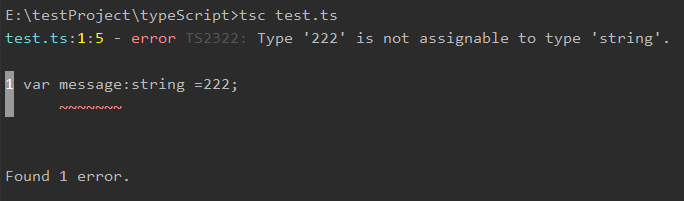
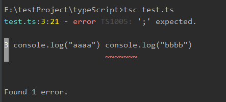

原文连接:https://www.cnblogs.com/daizhong/p/11277781.html
TypeScript学习随笔（一）
这么久了还不没好好学习哈这么火的ts,边学边练边记吧！
啥子是TypeScript
TypeScript 是 JavaScript 的一个超集，支持 es6 标准。
TypeScript 由微软开发的自由和开源的编程语言。
TypeScript 设计目标是开发大型应用，它可以编译成纯 JavaScript，编译出来的 JavaScript 可以运行在任何浏览器上。
语言特性
TypeScript 是一种给 JavaScript 添加特性的语言扩展。增加的功能包括：
- 类型批注和编译时类型检查
- 类型推断
- 类型擦除
- 接口
- 枚举
- Mixin
- 泛型编程
- 名字空间
- 元组
- Await
以下功能是从 ECMA 2015 反向移植而来：
- 类
- 模块
- lambda 函数的箭头语法
- 可选参数以及默认参数
额。。。。反正直接看，大部分都不太懂事什么玩意儿。。。，肯定是重点就是了，so继续看吧！
JavaScript 与 TypeScript 的区别
TypeScript 是 JavaScript 的超集，扩展了 JavaScript 的语法，因此现有的 JavaScript 代码可与 TypeScript 一起工作无需任何修改，TypeScript 通过类型注解提供编译时的静态类型检查。
TypeScript 可处理已有的 JavaScript 代码，并只对其中的 TypeScript 代码进行编译。
TypeScript 安装
噼里啪啦。。。老一套
npm install -g typescript
$ tsc -v
Version 3.3.3333
然后我们新建一个 test.ts 的文件，代码如下：
var message:string = "Hello World"
console.log(message) 通常我们使用 .ts 作为 TypeScript 代码文件的扩展名。
然后执行以下命令将 TypeScript 转换为 JavaScript 代码：
tsc test.ts这时候再当前目录下（与 test.ts 同一目录）就会生成一个 test.js 文件，代码如下：
var message = "Hello World";
console.log(message);使用 node 命令来执行 test.js 文件：
$ node test.js
Hello WorldTypeScript 转换为 JavaScript 过程如下图：

看到这，明显 :string 肯定就是传说中的限制了类型，把我们的弱类型javascript 搞成强类型了，来来来自己试一下：
var message:string =222;
console.log(message);所谓时间是检验真理的唯一标准，果不其然

提示还是很到位的，明说了，这类型不是“string”,不能转； gogogo 继续
TypeScript 基础语法
TypeScript 程序由以下几个部分组成：
- 模块
- 函数
- 变量
- 语句和表达式
- 注释
第一个 TypeScript 程序
刚才写过了，多补充一个：同时编译多个 ts 文件：
tsc file1.ts, file2.ts, file3.ts
tsc 常用编译参数如下表所示：
| 序号 | 编译参数说明 |
|---|---|
| 1. |
--help || -h 显示帮助信息 |
| 2. |
--module 载入扩展模块 |
| 3. |
--target 设置 ECMA 版本 |
| 4. |
--declaration 额外生成一个 .d.ts 扩展名的文件。 以上命令会生成 ts-hw.d.ts、ts-hw.js 两个文件。 |
| 5. |
--removeComments 删除文件的注释 |
| 6. |
--out 编译多个文件并合并到一个输出的文件 |
| 7. |
--sourcemap 生成一个 sourcemap (.map) 文件。 sourcemap 是一个存储源代码与编译代码对应位置映射的信息文件。 |
| 8. |
--module noImplicitAny 在表达式和声明上有隐含的 any 类型时报错 |
| 9. |
--watch || -w 在监视模式下运行编译器。会监视输出文件，在它们改变时重新编译。 |
TypeScript 保留关键字
就是那些不能乱取名字的
| break | as | any | switch |
| case | if | throw | else |
| var | number | string | get |
| module | type | instanceof | typeof |
| public | private | enum | export |
| finally | for | while | void |
| null | super | this | new |
| in | return | true | false |
| any | extends | static | let |
| package | implements | interface | function |
| new | try | yield | const |
| continue | do | catch |
空白和换行
TypeScript 会忽略程序中出现的空格、制表符和换行符。
空格、制表符通常用来缩进代码，使代码易于阅读和理解
TypeScript 区分大小写
严格点好，妈妈再也不用担心我乱取名，乱用名了。
分号是可选的
可用可不用，但是。。。但是。。。写在同一行就必须要了哦，不然就报错哦；还是那句话：时间是检验整理的唯一标准。。。。gogogo
console.log("aaa") console.log("bbb");
提示也够明显，也方便找；不错不错
TypeScript 支持两种类型的注释
-
单行注释 ( // ) − 在 // 后面的文字都是注释内容。
-
多行注释 (/* */) − 这种注释可以跨越多行。
这个都一样一样的。咦...顺便回一下HTML 和css的注释
html
1.普通注释 ： <!-- html注释的内容 -->
2.条件注释 ：
- <h1>您正在使用IE浏览器</h1>
- <!--[if IE 6]>
- <h2>如果IE版本是 6，我将被IE6浏览器显示</h2>
- <![endif]-->
- <!--[if IE 7]>
- <h2>如果IE版本是 7，我将被IE7浏览器显示</h2>
- <![endif]-->
css
和js一样一样的------------ (/* */) || //
TypeScript 与面向对象
TypeScript 是一种面向对象的编程语言。
又来回顾下什么是面向对象：
面向对象是一种对现实世界理解和抽象的方法。
（太TM抽象了。大概就是“万物皆对象”，把什么都可以当成一个对象，你只需要知道怎么做能得到你要的东西，而不需要知道东西是怎么做的，怎么出来的。
好比你做锻炼，你知道俯卧撑能锻炼上肢就好了，并不知道他带动什么什么核心肌肉什么的，什么转什么的，一大堆）面向对象主要有两个概念：对象和类。
- 对象：对象是类的一个实例（对象不是找个女朋友），有状态和行为。例如，一条狗是一个对象，它的状态有：颜色、名字、品种；行为有：摇尾巴、叫、吃等。
- 类：类是一个模板，它描述一类对象的行为和状态。
- 方法：方法是类的操作的实现步骤。
-
下图中 girl、boy 为类，而具体的每个人为该类的对象：

TypeScript 面向对象编程实例：
class Site {
name(){
console.log("Cory")
}
}
var obj = new Site();
obj.name();
TypeScript 基础类型
| 数据类型 | 关键字 | 描述 |
|---|---|---|
| 任意类型 | any | 声明为 any 的变量可以赋予任意类型的值。 |
| 数字类型 | number |
双精度 64 位浮点值。它可以用来表示整数和分数。 |
| 字符串类型 | string |
一个字符系列，使用单引号（'）或双引号（"）来表示字符串类型。反引号（`）来定义多行文本和内嵌表达式。 |
| 布尔类型 | boolean |
表示逻辑值：true 和 false。 |
| 数组类型 | 无 |
声明变量为数组。 |
| 元组 | 无 |
元组类型用来表示已知元素数量和类型的数组，各元素的类型不必相同，对应位置的类型需要相同。 |
| 枚举 | enum |
枚举类型用于定义数值集合。 |
| void | void |
用于标识方法返回值的类型，表示该方法没有返回值。 |
| null | null |
表示对象值缺失。 |
| undefined | undefined |
用于初始化变量为一个未定义的值 |
| never | never |
never 是其它类型（包括 null 和 undefined）的子类型，代表从不会出现的值。 |
注意：TypeScript 和 JavaScript 没有整数类型。
Any 类型
任意值是 TypeScript 针对编程时类型不明确的变量使用的一种数据类型，它常用于以下三种情况。
1、变量的值会动态改变时，比如来自用户的输入，任意值类型可以让这些变量跳过编译阶段的类型检查，示例代码如下：let x: any = 1; // 数字类型
x = 'I am who I am'; // 字符串类型
x = false; // 布尔类型2、改写现有代码时，任意值允许在编译时可选择地包含或移除类型检查，示例代码如下：
let x: any = 4;
x.ifItExists(); // 正确，ifItExists方法在运行时可能存在，但这里并不会检查
x.toFixed(); // 正确3、定义存储各种类型数据的数组时，示例代码如下：
let arrayList: any[] = [1, false, 'fine'];
arrayList[1] = 100;Null 和 Undefined
null
在 JavaScript 中 null 表示 "什么都没有"。
null是一个只有一个值的特殊类型。表示一个空对象引用。
用 typeof 检测 null 返回是 object。
undefined
在 JavaScript 中, undefined 是一个没有设置值的变量。
typeof 一个没有值的变量会返回 undefined。
Null 和 Undefined 是其他任何类型（包括 void）的子类型，可以赋值给其它类型，如数字类型，此时，赋值后的类型会变成 null 或 undefined。而在TypeScript中启用严格的空校验（--strictNullChecks）特性，就可以使得null 和 undefined 只能被赋值给 void 或本身对应的类型，示例代码如下：
// 启用 --strictNullChecks
let x: number;
x = 1; // 运行正确
x = undefined; // 运行错误
x = null; // 运行错误上面的例子中变量 x 只能是数字类型。如果一个类型可能出行 null 或 undefined， 可以用 | 来支持多种类型，示例代码如下：
// 启用 --strictNullChecks
let x: number | null | undefined;
x = 1; // 运行正确
x = undefined; // 运行正确
x = null; // 运行正确never 类型
never 是其它类型（包括 null 和 undefined）的子类型，代表从不会出现的值。这意味着声明为 never 类型的变量只能被 never 类型所赋值，在函数中它通常表现为抛出异常或无法执行到终止点（例如无限循环），示例代码如下：
学习文档链接：https://www.runoob.com/typescript/ts-tutorial.html